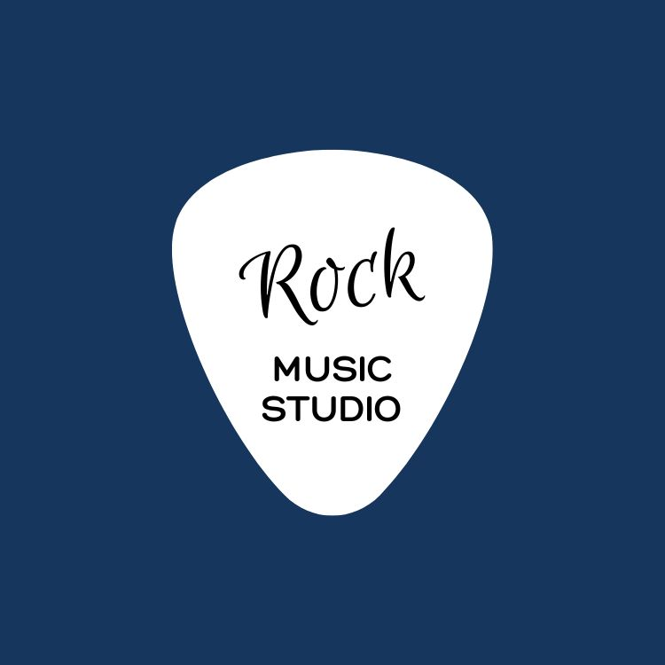

豪拜兒|只想聽音樂，你不可不知的Rock搖滾樂 Youtube頻道

搖滾樂是20世紀中期以來最具影響力和受歡迎的音樂風格之一。它的誕生源於美國南部的布魯斯音樂、鄉村音樂和節奏藍調的融合，這些音樂風格充滿了活力、激情和情感。隨著時間的推移，搖滾樂從一種音樂風格演變成了一種文化運動，影響著人們的生活方式、時尚和價值觀。
搖滾樂的起源可以追溯到20世紀50年代初，當時美國社會正處於一個充滿變革和動盪的時期。青少年們渴望表達自己的想法和情感，而搖滾樂正是他們尋找的出口。艾爾維斯·普雷斯利、貝貝·金斯、小理查德和貓王是搖滾樂的先驅，他們的音樂將不同種族和文化的元素融合在一起，創造出了一種全新的音樂風格。
隨著時間的推移，搖滾樂逐漸演變出了多個分支，包括古典搖滾、迷幻搖滾、重金屬搖滾等。知名的樂團和樂手如貝多芬之子、滾石樂團、門和吉米·亨德里克斯等，都對搖滾樂的發展做出了重要貢獻。
搖滾樂不僅是一種音樂風格，更是一種文化運動和生活態度的象徵。它激勵著人們勇敢表達自己、追求夢想，並且一直影響著世界各地的音樂和文化。在這個前言中，我們將深入探討搖滾樂的起源、歷史、知名樂團和樂手，以及它在現代社會中的影響力和意義。
搖滾樂的歷史
搖滾樂的起源可以追溯到20世紀50年代初美國南部的布魯斯音樂、鄉村音樂和節奏藍調的融合。著名的搖滾樂先驅包括艾爾維斯·普雷斯利（Elvis Presley）、貝貝·金斯（Buddy Holly）、小理查德（Little Richard）和貓王（Chuck Berry）。這些音樂家將非洲裔美國人的節奏和靈感與白人音樂的元素相結合，創造出了一種新的音樂風格，即搖滾樂。
搖滾樂的分類
搖滾樂的分類非常廣泛，包括但不限於以下幾種：
- 古典搖滾（Classic Rock）：指60年代和70年代初期的搖滾樂風格，如披頭四（The Beatles）、滾石樂團（The Rolling Stones）等。
- 迷幻搖滾（Psychedelic Rock）：以其實驗性和迷幻的音樂風格而聞名，如門（The Doors）、傑夫·貝克（Jefferson Airplane）等。
- 重金屬搖滾（Heavy Metal）：以其強烈的吉他和鼓擊節奏而聞名，如金屬樂團（Metallica）、鐵娘子（Iron Maiden）等。
搖滾樂已成為世界上最受歡迎和廣泛傳播的音樂風格之一，其影響力持續至今。
世界著名的搖滾樂樂團和歌手
- 披頭四（The Beatles）：這個英國樂團在60年代風靡全球，是搖滾樂史上最具影響力的樂團之一。他們的音樂風格多樣，從搖滾、流行到迷幻等各種風格都有涉獵。
- 滾石樂團（The Rolling Stones）：這個英國樂團成立於60年代，以其強烈的節奏和叛逆態度而聞名。他們的音樂風格包括布魯斯搖滾、搖滾樂和搖滾搖滾。
- 門（The Doors）：這是一個美國樂團，成立於60年代末期，以其獨特的聲音和藝術風格而聞名。他們的音樂融合了搖滾、布魯斯、爵士和迷幻等元素。
- 吉米·亨德里克斯（Jimi Hendrix）：這位美國吉他手是搖滾樂史上最偉大的吉他手之一，以其技巧和創新而聞名。他的音樂融合了搖滾、布魯斯、迷幻和靈魂等風格。
搖滾樂的演奏特色
搖滾樂的演奏特色有幾個主要方面：
- 強烈的節奏感： 搖滾樂通常以強烈而明顯的節奏作為基礎，通常是四拍節奏。這種節奏感能夠引導聽眾跟隨音樂的節奏節奏搖擺，產生一種強烈的動感和節奏感。
- 電吉他的獨奏： 電吉他在搖滾樂中扮演著極其重要的角色，它不僅負責樂曲的主旋律，還負責了樂曲的獨奏部分。搖滾樂的吉他獨奏通常具有高度的技巧性和表現力，經常使用各種技巧和效果器創造出多樣的音色和效果。
- 激情的演唱表現： 搖滾樂的主唱通常以激情和力量表演，他們的聲音帶有強烈的情感和表達力。有時候，主唱會通過吶喊、咆哮或扭曲的方式表達情感，這也是搖滾樂獨有的一種表現方式。
- 強大的鼓點： 鼓在搖滾樂中也是非常重要的樂器之一，它負責提供強烈的節奏支撐和動感。搖滾樂的鼓點通常節奏明確，力度強勁，能夠為整個樂曲注入強大的能量。
總的來說，搖滾樂的演奏特色在於其強烈的節奏感、電吉他的獨奏、激情的演唱表現和強大的鼓點，這些元素共同塑造了搖滾樂獨特而富有魅力的音樂風格。
搖滾樂歷史、流派和知名樂團與歌手的探索，無不展現了這個音樂類型的多樣性和影響力。對於熱愛音樂和節奏的人來說，搖滾樂絕對是一場不容錯過的音樂饗宴。
之前分享過的一個Youtube音樂頻道，最近上新了一些funk音樂曲目，讓我們一起來欣賞。由於 YouTube 音樂版權的原因，以下將附上連結，請大家點擊連結跳轉到 YouTube 聆聽吧！


其他音樂類型
對音樂有興趣的小夥伴們，也許可以參考之前的文章，了解其他音樂類型的介紹。
享受更好的音樂體驗
想要享受更好的音樂體驗嗎？不妨參考之前音箱和耳機介紹的文章。